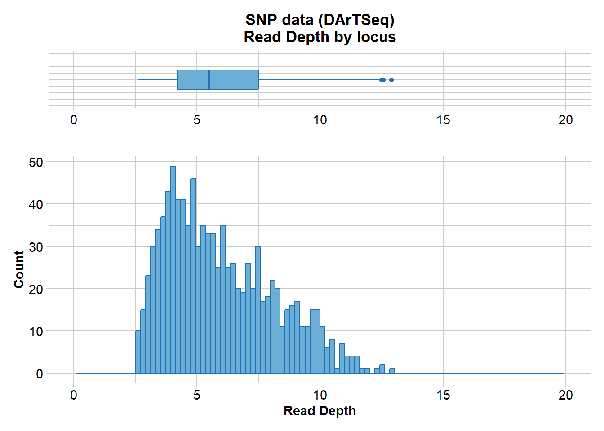

library(dartR.base)
library(dartR.sexlinked)Session 10: Sex-linked markers
Required packages
Dataset 1 - ZW//ZZ - The Yellow Tufted Honeyeater

Load data
data("YTH")
YTH # Explore the dataset ********************
*** DARTR OBJECT ***
********************
** 641 genotypes, 1,000 SNPs , size: 50 Mb
missing data: 166024 (=25.9 %) scored as NA
** Genetic data
@gen: list of 641 SNPbin
@ploidy: ploidy of each individual (range: 2-2)
** Additional data
@ind.names: 641 individual labels
@loc.names: 1000 locus labels
@loc.all: 1000 allele labels
@position: integer storing positions of the SNPs [within 69 base sequence]
@pop: population of each individual (group size range: 1-540)
@other: a list containing: loc.metrics, ind.metrics, loc.metrics.flags, verbose, history
@other$ind.metrics: id, pop, sex, sex_original, service, plate_location
@other$loc.metrics: AlleleID, CloneID, AlleleSequence, TrimmedSequence, Chrom_Lichenostomus_HeHo_v1, ChromPos_Lichenostomus_HeHo_v1, AlnCnt_Lichenostomus_HeHo_v1, AlnEvalue_Lichenostomus_HeHo_v1, SNP, SnpPosition, CallRate, OneRatioRef, OneRatioSnp, FreqHomRef, FreqHomSnp, FreqHets, PICRef, PICSnp, AvgPIC, AvgCountRef, AvgCountSnp, RepAvg, clone, uid, rdepth, maf
@other$latlon[g]: no coordinates attachedYTH@n.loc # Number of SNPs[1] 1000length(YTH@ind.names) # Number of individuals[1] 641Run filter.sex.linked
This function identifies sex-linked and autosomal loci present in a SNP dataset (i.e., genlight object) using individuals with known sex. It identifies five types of loci: w-linked or y-linked, sex-biased, z-linked or x-linked, gametologous and autosomal.
The genlight object must contain in gl@other$ind.metrics a column named “id”, and a column named “sex” in which individuals with known-sex are assigned ‘M’ for male, or ‘F’ for female. The function ignores individuals that are assigned anything else or nothing at all (unknown-sex).

Warning
Set ncores to more than 1 (default) if you have more than 50,000 SNPs, since it could actually slow down the analysis with smaller datasets.
knitr::kable(head(YTH@other$ind.metrics)) # Check that ind.metrics has the necessary columns| id | pop | sex | sex_original | service | plate_location | |
|---|---|---|---|---|---|---|
| ANWC46839 | ANWC46839 | Melanops | F | F | DLich17-2918 | 1-A1 |
| W49 | W49 | Cassidix | F | F | DLich17-2918 | 1-A10 |
| W90 | W90 | Cassidix | F | F | DLich17-2918 | 1-A12 |
| C25 | C25 | Cassidix | M | M | DLich17-2918 | 1-A2 |
| C8 | C8 | Cassidix | M | M | DLich17-2918 | 1-A3 |
| W70 | W70 | Cassidix | F | F | DLich17-2918 | 1-A4 |
res <- dartR.sexlinked::filter.sex.linked(gl = YTH, system = "zw")Detected 289 females and 347 males.Starting phase 1. May take a while...Building call rate plots.Done. Starting phase 2.Building heterozygosity plots.Done building heterozygosity plots.**FINISHED** Total of analyzed loci: 1000.
Found 46 sex-linked loci:
2 W-linked loci
33 sex-biased loci
10 Z-linked loci
1 ZW gametologs.
And 954 autosomal loci.
Exercise

How many males and females does the dataset contain?
How many sex-linked loci were found?
Now check the output:
res$w.linked # Notice that it says 'w-linked' ********************
*** DARTR OBJECT ***
********************
** 641 genotypes, 2 SNPs , size: 48.9 Mb
missing data: 695 (=54.21 %) scored as NA
** Genetic data
@gen: list of 641 SNPbin
@ploidy: ploidy of each individual (range: 2-2)
** Additional data
@ind.names: 641 individual labels
@loc.names: 2 locus labels
@loc.all: 2 allele labels
@position: integer storing positions of the SNPs [within 69 base sequence]
@pop: population of each individual (group size range: 1-540)
@other: a list containing: loc.metrics, ind.metrics, loc.metrics.flags, verbose, history
@other$ind.metrics: id, pop, sex, sex_original, service, plate_location
@other$loc.metrics: AlleleID, CloneID, AlleleSequence, TrimmedSequence, Chrom_Lichenostomus_HeHo_v1, ChromPos_Lichenostomus_HeHo_v1, AlnCnt_Lichenostomus_HeHo_v1, AlnEvalue_Lichenostomus_HeHo_v1, SNP, SnpPosition, CallRate, OneRatioRef, OneRatioSnp, FreqHomRef, FreqHomSnp, FreqHets, PICRef, PICSnp, AvgPIC, AvgCountRef, AvgCountSnp, RepAvg, clone, uid, rdepth, maf
@other$latlon[g]: no coordinates attachedres$z.linked # Notice that it says 'z-linked' ********************
*** DARTR OBJECT ***
********************
** 641 genotypes, 10 SNPs , size: 48.9 Mb
missing data: 268 (=4.18 %) scored as NA
** Genetic data
@gen: list of 641 SNPbin
@ploidy: ploidy of each individual (range: 2-2)
** Additional data
@ind.names: 641 individual labels
@loc.names: 10 locus labels
@loc.all: 10 allele labels
@position: integer storing positions of the SNPs [within 69 base sequence]
@pop: population of each individual (group size range: 1-540)
@other: a list containing: loc.metrics, ind.metrics, loc.metrics.flags, verbose, history
@other$ind.metrics: id, pop, sex, sex_original, service, plate_location
@other$loc.metrics: AlleleID, CloneID, AlleleSequence, TrimmedSequence, Chrom_Lichenostomus_HeHo_v1, ChromPos_Lichenostomus_HeHo_v1, AlnCnt_Lichenostomus_HeHo_v1, AlnEvalue_Lichenostomus_HeHo_v1, SNP, SnpPosition, CallRate, OneRatioRef, OneRatioSnp, FreqHomRef, FreqHomSnp, FreqHets, PICRef, PICSnp, AvgPIC, AvgCountRef, AvgCountSnp, RepAvg, clone, uid, rdepth, maf
@other$latlon[g]: no coordinates attachedres$gametolog ********************
*** DARTR OBJECT ***
********************
** 641 genotypes, 1 SNPs , size: 48.9 Mb
missing data: 13 (=2.03 %) scored as NA
** Genetic data
@gen: list of 641 SNPbin
@ploidy: ploidy of each individual (range: 2-2)
** Additional data
@ind.names: 641 individual labels
@loc.names: 1 locus labels
@loc.all: 1 allele labels
@position: integer storing positions of the SNPs [within 69 base sequence]
@pop: population of each individual (group size range: 1-540)
@other: a list containing: loc.metrics, ind.metrics, loc.metrics.flags, verbose, history
@other$ind.metrics: id, pop, sex, sex_original, service, plate_location
@other$loc.metrics: AlleleID, CloneID, AlleleSequence, TrimmedSequence, Chrom_Lichenostomus_HeHo_v1, ChromPos_Lichenostomus_HeHo_v1, AlnCnt_Lichenostomus_HeHo_v1, AlnEvalue_Lichenostomus_HeHo_v1, SNP, SnpPosition, CallRate, OneRatioRef, OneRatioSnp, FreqHomRef, FreqHomSnp, FreqHets, PICRef, PICSnp, AvgPIC, AvgCountRef, AvgCountSnp, RepAvg, clone, uid, rdepth, maf
@other$latlon[g]: no coordinates attachedres$sex.biased ********************
*** DARTR OBJECT ***
********************
** 641 genotypes, 33 SNPs , size: 48.9 Mb
missing data: 5176 (=24.47 %) scored as NA
** Genetic data
@gen: list of 641 SNPbin
@ploidy: ploidy of each individual (range: 2-2)
** Additional data
@ind.names: 641 individual labels
@loc.names: 33 locus labels
@loc.all: 33 allele labels
@position: integer storing positions of the SNPs [within 69 base sequence]
@pop: population of each individual (group size range: 1-540)
@other: a list containing: loc.metrics, ind.metrics, loc.metrics.flags, verbose, history
@other$ind.metrics: id, pop, sex, sex_original, service, plate_location
@other$loc.metrics: AlleleID, CloneID, AlleleSequence, TrimmedSequence, Chrom_Lichenostomus_HeHo_v1, ChromPos_Lichenostomus_HeHo_v1, AlnCnt_Lichenostomus_HeHo_v1, AlnEvalue_Lichenostomus_HeHo_v1, SNP, SnpPosition, CallRate, OneRatioRef, OneRatioSnp, FreqHomRef, FreqHomSnp, FreqHets, PICRef, PICSnp, AvgPIC, AvgCountRef, AvgCountSnp, RepAvg, clone, uid, rdepth, maf
@other$latlon[g]: no coordinates attachedres$autosomal ********************
*** DARTR OBJECT ***
********************
** 641 genotypes, 954 SNPs , size: 50 Mb
missing data: 159872 (=26.14 %) scored as NA
** Genetic data
@gen: list of 641 SNPbin
@ploidy: ploidy of each individual (range: 2-2)
** Additional data
@ind.names: 641 individual labels
@loc.names: 954 locus labels
@loc.all: 954 allele labels
@position: integer storing positions of the SNPs [within 69 base sequence]
@pop: population of each individual (group size range: 1-540)
@other: a list containing: loc.metrics, ind.metrics, loc.metrics.flags, verbose, history
@other$ind.metrics: id, pop, sex, sex_original, service, plate_location
@other$loc.metrics: AlleleID, CloneID, AlleleSequence, TrimmedSequence, Chrom_Lichenostomus_HeHo_v1, ChromPos_Lichenostomus_HeHo_v1, AlnCnt_Lichenostomus_HeHo_v1, AlnEvalue_Lichenostomus_HeHo_v1, SNP, SnpPosition, CallRate, OneRatioRef, OneRatioSnp, FreqHomRef, FreqHomSnp, FreqHets, PICRef, PICSnp, AvgPIC, AvgCountRef, AvgCountSnp, RepAvg, clone, uid, rdepth, maf
@other$latlon[g]: no coordinates attachedknitr::kable(head(res$results.table)) # The output table| index | count.F.miss | count.M.miss | count.F.scored | count.M.scored | ratio | p.value | p.adjusted | scoringRate.F | scoringRate.M | w.linked | sex.biased | count.F.het | count.M.het | count.F.hom | count.M.hom | stat | stat.p.value | stat.p.adjusted | heterozygosity.F | heterozygosity.M | z.linked | zw.gametolog | |
|---|---|---|---|---|---|---|---|---|---|---|---|---|---|---|---|---|---|---|---|---|---|---|---|
| 27338051-23-G/A | 1 | 216 | 270 | 73 | 77 | 0.8440653 | 0.3987958 | 0.9728507 | 0.2525952 | 0.2219020 | FALSE | FALSE | 0 | 0 | 73 | 77 | 1.0544475 | 1.0000000 | 1 | 0.0000000 | 0.0000000 | FALSE | FALSE |
| 27350703-58-A/T | 2 | 4 | 4 | 285 | 343 | 1.2031527 | 1.0000000 | 1.0000000 | 0.9861592 | 0.9884726 | FALSE | FALSE | 0 | 85 | 285 | 258 | 0.0106954 | 0.0000000 | 0 | 0.0000000 | 0.2478134 | TRUE | FALSE |
| 42055937-67-T/G | 3 | 54 | 59 | 235 | 288 | 1.1214686 | 0.6034024 | 1.0000000 | 0.8131488 | 0.8299712 | FALSE | FALSE | 22 | 36 | 213 | 252 | 0.7234483 | 0.2666319 | 1 | 0.0936170 | 0.1250000 | FALSE | FALSE |
| 27340971-37-C/G | 4 | 35 | 73 | 254 | 274 | 0.5177315 | 0.0029461 | 0.0701449 | 0.8788927 | 0.7896254 | FALSE | FALSE | 0 | 0 | 254 | 274 | 1.0785629 | 1.0000000 | 1 | 0.0000000 | 0.0000000 | FALSE | FALSE |
| 42071187-64-G/T | 5 | 132 | 167 | 157 | 180 | 0.9063543 | 0.5766590 | 1.0000000 | 0.5432526 | 0.5187320 | FALSE | FALSE | 19 | 16 | 138 | 164 | 1.4097673 | 0.3735398 | 1 | 0.1210191 | 0.0888889 | FALSE | FALSE |
| 27352295-35-A/T | 6 | 191 | 244 | 98 | 103 | 0.8229837 | 0.2662610 | 0.8551634 | 0.3391003 | 0.2968300 | FALSE | FALSE | 9 | 9 | 89 | 94 | 1.0559200 | 1.0000000 | 1 | 0.0918367 | 0.0873786 | FALSE | FALSE |
The output consists of a genlight object for each type of loci, plus a results table.
Run infer.sex
This function uses the complete output of function filter.sex.linked (list of 6 objects) to infer the sex of all individuals in the dataset. Specifically, the function uses 3 types of sex-linked loci (W-/Y-linked, Z-/X-linked, and gametologs), assigns a preliminary genetic sex for each type of sex-linked loci available, and outputs an agreed sex.
sexID <- dartR.sexlinked::infer.sex(gl_sex_filtered = res, system = "zw",
seed = 124)Not enough gametologs (need at least 5). Assigning NA...***FINISHED***knitr::kable(head(sexID))| id | w.linked.sex | #missing | #called | z.linked.sex | #Hom.z | #Het.z | gametolog.sex | #Hom.g | #Het.g | agreed.sex | |
|---|---|---|---|---|---|---|---|---|---|---|---|
| ANWC46839 | ANWC46839 | F | 2 | 0 | F | 0 | 8 | NA | NA | NA | F |
| W49 | W49 | F | 2 | 0 | F | 0 | 9 | NA | NA | NA | F |
| W90 | W90 | F | 2 | 0 | F | 0 | 9 | NA | NA | NA | F |
| C25 | C25 | M | 0 | 2 | M | 2 | 8 | NA | NA | NA | M |
| C8 | C8 | M | 0 | 2 | M | 3 | 7 | NA | NA | NA | M |
| W70 | W70 | F | 2 | 0 | F | 0 | 10 | NA | NA | NA | F |
IMPORTANT
We created this function with the explicit intent that a human checks the evidence for the agreed sex that do NOT agree for all types of sex-linked loci (denoted as ‘*M’ or ‘*F’). This human can then use their criterion to validate these assignments.
Exercise

Can you find individuals for which the agreed sex is uncertain (i.e., has an asterisk “*”)?
Dataset 2 - XX/XY - The Leadbeater’s possum

Load data
data("LBP")
LBP # Explore the dataset ********************
*** DARTR OBJECT ***
********************
** 376 genotypes, 1,000 SNPs , size: 5.2 Mb
missing data: 18414 (=4.9 %) scored as NA
** Genetic data
@gen: list of 376 SNPbin
@ploidy: ploidy of each individual (range: 2-2)
** Additional data
@ind.names: 376 individual labels
@loc.names: 1000 locus labels
@loc.all: 1000 allele labels
@position: integer storing positions of the SNPs [within 69 base sequence]
@pop: population of each individual (group size range: 95-281)
@other: a list containing: loc.metrics, ind.metrics, loc.metrics.flags, verbose, history
@other$ind.metrics: id, sex, pop, Year.collected, service, plate_location
@other$loc.metrics: AlleleID, CloneID, AlleleSequence, TrimmedSequence, Chrom_Possum_v2, ChromPos_Possum_v2, AlnCnt_Possum_v2, AlnEvalue_Possum_v2, SNP, SnpPosition, CallRate, OneRatioRef, OneRatioSnp, FreqHomRef, FreqHomSnp, FreqHets, PICRef, PICSnp, AvgPIC, AvgCountRef, AvgCountSnp, RepAvg, clone, uid, rdepth, monomorphs, maf, OneRatio, PIC
@other$latlon[g]: no coordinates attachedLBP@n.loc # Number of SNPs[1] 1000length(LBP@ind.names) # Number of individuals[1] 376Run filter.sex.linked
This function identifies sex-linked and autosomal loci present in a SNP dataset (genlight object) using individuals with known sex. It identifies five types of loci: w-linked or y-linked, sex-biased, z-linked or x-linked, gametologous and autosomal.
The genlight object must contain in gl@other$ind.metrics a column named “id”, and a column named “sex” in which individuals with known-sex are assigned ‘M’ for male, or ‘F’ for female. The function ignores individuals that are assigned anything else or nothing at all (unknown-sex).

knitr::kable(head(LBP@other$ind.metrics)) # Check that ind.metrics has the necessary columns| id | sex | pop | Year.collected | service | plate_location | |
|---|---|---|---|---|---|---|
| Y2 | Y2 | F | Yellingbo | 1997 | DLpos17-2786 | 1-A1 |
| Y16 | Y16 | M | Yellingbo | 2001 | DLpos17-2786 | 1-A10 |
| Y17 | Y17 | F | Yellingbo | 1997 | DLpos17-2786 | 1-A11 |
| Y18 | Y18 | F | Yellingbo | 1999 | DLpos17-2786 | 1-A12 |
| Y3 | Y3 | F | Yellingbo | 1997 | DLpos17-2786 | 1-A2 |
| Y4 | Y4 | M | Yellingbo | 1997 | DLpos17-2786 | 1-A3 |
res <- dartR.sexlinked::filter.sex.linked(gl = LBP, system = "xy")Detected 162 females and 211 males.Starting phase 1. May take a while...Building call rate plots.
Done. Starting phase 2.Building heterozygosity plots.Done building heterozygosity plots.**FINISHED** Total of analyzed loci: 1000.
Found 13 sex-linked loci:
0 Y-linked loci
3 sex-biased loci
9 X-linked loci
1 XY gametologs.
And 987 autosomal loci.
Exercise

How many males and females does the dataset contain?
How many sex-linked loci were found?
Now check the output:
res$y.linked # Notice that it says 'y-linked' ********************
*** DARTR OBJECT ***
********************
** 376 genotypes, 0 SNPs , size: 4.8 Mb
missing data: 18414 (=Inf %) scored as NA
** Genetic data
@gen: list of 376 SNPbin
@ploidy: ploidy of each individual (range: 2-2)
** Additional data
@ind.names: 376 individual labels
@loc.names: 0 locus labels
@loc.all: 0 allele labels
@position: integer storing positions of the SNPs [within 69 base sequence]
@pop: population of each individual (group size range: 95-281)
@other: a list containing: loc.metrics, ind.metrics, loc.metrics.flags, verbose, history
@other$ind.metrics: id, sex, pop, Year.collected, service, plate_location
@other$loc.metrics: AlleleID, CloneID, AlleleSequence, TrimmedSequence, Chrom_Possum_v2, ChromPos_Possum_v2, AlnCnt_Possum_v2, AlnEvalue_Possum_v2, SNP, SnpPosition, CallRate, OneRatioRef, OneRatioSnp, FreqHomRef, FreqHomSnp, FreqHets, PICRef, PICSnp, AvgPIC, AvgCountRef, AvgCountSnp, RepAvg, clone, uid, rdepth, monomorphs, maf, OneRatio, PIC
@other$latlon[g]: no coordinates attachedres$x.linked # Notice that it says 'x-linked' ********************
*** DARTR OBJECT ***
********************
** 376 genotypes, 9 SNPs , size: 4.7 Mb
missing data: 99 (=2.93 %) scored as NA
** Genetic data
@gen: list of 376 SNPbin
@ploidy: ploidy of each individual (range: 2-2)
** Additional data
@ind.names: 376 individual labels
@loc.names: 9 locus labels
@loc.all: 9 allele labels
@position: integer storing positions of the SNPs [within 69 base sequence]
@pop: population of each individual (group size range: 95-281)
@other: a list containing: loc.metrics, ind.metrics, loc.metrics.flags, verbose, history
@other$ind.metrics: id, sex, pop, Year.collected, service, plate_location
@other$loc.metrics: AlleleID, CloneID, AlleleSequence, TrimmedSequence, Chrom_Possum_v2, ChromPos_Possum_v2, AlnCnt_Possum_v2, AlnEvalue_Possum_v2, SNP, SnpPosition, CallRate, OneRatioRef, OneRatioSnp, FreqHomRef, FreqHomSnp, FreqHets, PICRef, PICSnp, AvgPIC, AvgCountRef, AvgCountSnp, RepAvg, clone, uid, rdepth, monomorphs, maf, OneRatio, PIC
@other$latlon[g]: no coordinates attachedres$gametolog ********************
*** DARTR OBJECT ***
********************
** 376 genotypes, 1 SNPs , size: 4.7 Mb
missing data: 0 (=0 %) scored as NA
** Genetic data
@gen: list of 376 SNPbin
@ploidy: ploidy of each individual (range: 2-2)
** Additional data
@ind.names: 376 individual labels
@loc.names: 1 locus labels
@loc.all: 1 allele labels
@position: integer storing positions of the SNPs [within 69 base sequence]
@pop: population of each individual (group size range: 95-281)
@other: a list containing: loc.metrics, ind.metrics, loc.metrics.flags, verbose, history
@other$ind.metrics: id, sex, pop, Year.collected, service, plate_location
@other$loc.metrics: AlleleID, CloneID, AlleleSequence, TrimmedSequence, Chrom_Possum_v2, ChromPos_Possum_v2, AlnCnt_Possum_v2, AlnEvalue_Possum_v2, SNP, SnpPosition, CallRate, OneRatioRef, OneRatioSnp, FreqHomRef, FreqHomSnp, FreqHets, PICRef, PICSnp, AvgPIC, AvgCountRef, AvgCountSnp, RepAvg, clone, uid, rdepth, monomorphs, maf, OneRatio, PIC
@other$latlon[g]: no coordinates attachedres$sex.biased ********************
*** DARTR OBJECT ***
********************
** 376 genotypes, 3 SNPs , size: 4.7 Mb
missing data: 261 (=23.14 %) scored as NA
** Genetic data
@gen: list of 376 SNPbin
@ploidy: ploidy of each individual (range: 2-2)
** Additional data
@ind.names: 376 individual labels
@loc.names: 3 locus labels
@loc.all: 3 allele labels
@position: integer storing positions of the SNPs [within 69 base sequence]
@pop: population of each individual (group size range: 95-281)
@other: a list containing: loc.metrics, ind.metrics, loc.metrics.flags, verbose, history
@other$ind.metrics: id, sex, pop, Year.collected, service, plate_location
@other$loc.metrics: AlleleID, CloneID, AlleleSequence, TrimmedSequence, Chrom_Possum_v2, ChromPos_Possum_v2, AlnCnt_Possum_v2, AlnEvalue_Possum_v2, SNP, SnpPosition, CallRate, OneRatioRef, OneRatioSnp, FreqHomRef, FreqHomSnp, FreqHets, PICRef, PICSnp, AvgPIC, AvgCountRef, AvgCountSnp, RepAvg, clone, uid, rdepth, monomorphs, maf, OneRatio, PIC
@other$latlon[g]: no coordinates attachedres$autosomal ********************
*** DARTR OBJECT ***
********************
** 376 genotypes, 987 SNPs , size: 5.3 Mb
missing data: 18054 (=4.86 %) scored as NA
** Genetic data
@gen: list of 376 SNPbin
@ploidy: ploidy of each individual (range: 2-2)
** Additional data
@ind.names: 376 individual labels
@loc.names: 987 locus labels
@loc.all: 987 allele labels
@position: integer storing positions of the SNPs [within 69 base sequence]
@pop: population of each individual (group size range: 95-281)
@other: a list containing: loc.metrics, ind.metrics, loc.metrics.flags, verbose, history
@other$ind.metrics: id, sex, pop, Year.collected, service, plate_location
@other$loc.metrics: AlleleID, CloneID, AlleleSequence, TrimmedSequence, Chrom_Possum_v2, ChromPos_Possum_v2, AlnCnt_Possum_v2, AlnEvalue_Possum_v2, SNP, SnpPosition, CallRate, OneRatioRef, OneRatioSnp, FreqHomRef, FreqHomSnp, FreqHets, PICRef, PICSnp, AvgPIC, AvgCountRef, AvgCountSnp, RepAvg, clone, uid, rdepth, monomorphs, maf, OneRatio, PIC
@other$latlon[g]: no coordinates attachedknitr::kable(head(res$results.table)) # The output table| index | count.F.miss | count.M.miss | count.F.scored | count.M.scored | ratio | p.value | p.adjusted | scoringRate.F | scoringRate.M | y.linked | sex.biased | count.F.het | count.M.het | count.F.hom | count.M.hom | stat | stat.p.value | stat.p.adjusted | heterozygosity.F | heterozygosity.M | x.linked | xy.gametolog | |
|---|---|---|---|---|---|---|---|---|---|---|---|---|---|---|---|---|---|---|---|---|---|---|---|
| 28686439-63-T/C | 1 | 0 | 0 | 162 | 211 | 1.301530 | 1.0000000 | 1 | 1.0000000 | 1.0000000 | FALSE | FALSE | 46 | 69 | 116 | 142 | 0.8165373 | 0.4286518 | 1.0000000 | 0.2839506 | 0.3270142 | FALSE | FALSE |
| 28685838-47-G/C | 2 | 16 | 13 | 146 | 198 | 1.666758 | 0.2415482 | 1 | 0.9012346 | 0.9383886 | FALSE | FALSE | 14 | 9 | 132 | 189 | 2.2220139 | 0.0805459 | 0.7568021 | 0.0958904 | 0.0454545 | FALSE | FALSE |
| 28686334-21-T/G | 3 | 1 | 0 | 161 | 211 | 1.309589 | 1.0000000 | 1 | 0.9938272 | 1.0000000 | FALSE | FALSE | 32 | 55 | 129 | 156 | 0.7042556 | 0.1754130 | 0.8886749 | 0.1987578 | 0.2606635 | FALSE | FALSE |
| 28679782-56-G/T | 4 | 1 | 0 | 161 | 211 | 1.309589 | 1.0000000 | 1 | 0.9938272 | 1.0000000 | FALSE | FALSE | 17 | 24 | 144 | 187 | 0.9200279 | 0.8681945 | 1.0000000 | 0.1055901 | 0.1137441 | FALSE | FALSE |
| 28685362-20-C/T | 5 | 0 | 0 | 162 | 211 | 1.301530 | 1.0000000 | 1 | 1.0000000 | 1.0000000 | FALSE | FALSE | 5 | 1 | 157 | 210 | 6.6572377 | 0.0894367 | 0.7891005 | 0.0308642 | 0.0047393 | FALSE | FALSE |
| 28688558-63-C/T | 6 | 1 | 1 | 161 | 210 | 1.303397 | 1.0000000 | 1 | 0.9938272 | 0.9952607 | FALSE | FALSE | 7 | 7 | 154 | 203 | 1.3171759 | 0.7845569 | 1.0000000 | 0.0434783 | 0.0333333 | FALSE | FALSE |
The output consists of a genlight object for each type of loci, plus a results table.
Run infer.sex
This function uses the output of function filter.sex.linked (list of 6 objects) to infer the sex of all individuals in the dataset. It uses 3 types of sex-linked loci (W-/Y-linked, Z-/X-linked, and gametologs), assigns a preliminary genetic sex for each type of sex-linked loci available, and outputs an agreed sex.
sexID <- dartR.sexlinked::infer.sex(gl_sex_filtered = res, system = "xy",
seed = 124)Not enough W-linked/Y-linked loci (need at least 1). Assigning NA...Not enough gametologs (need at least 5). Assigning NA...***FINISHED***knitr::kable(head(sexID))| id | y.linked.sex | #called | #missing | x.linked.sex | #Het.x | #Hom.x | gametolog.sex | #Het.g | #Hom.g | agreed.sex | |
|---|---|---|---|---|---|---|---|---|---|---|---|
| Y2 | Y2 | NA | NA | NA | F | 3 | 6 | NA | NA | NA | F |
| Y16 | Y16 | NA | NA | NA | M | 1 | 6 | NA | NA | NA | M |
| Y17 | Y17 | NA | NA | NA | F | 4 | 5 | NA | NA | NA | F |
| Y18 | Y18 | NA | NA | NA | M | 0 | 9 | NA | NA | NA | M |
| Y3 | Y3 | NA | NA | NA | M | 0 | 9 | NA | NA | NA | M |
| Y4 | Y4 | NA | NA | NA | M | 0 | 9 | NA | NA | NA | M |
What did the function mention about gametologs? How did that impact the results table? How many types of sex-linked loci were used to infer an agreed sex?
Exercise

Can you find individuals for which the agreed sex is uncertain (i.e., has an asterisk “*”)?
EXERCISE
Exercise

Imagine you are analyzing the genetic data of a population and you want to look at its genetic structure and genetic diversity. You get to work by filtering your beautiful set of SNPs. Because you are a rigorous, you want to test whether using function filter.sex.linked to properly filter out sex-linked loci changes the results of the populations analyses. So you: (1) process your SNP dataset by applying standard filters and run analyses, and (2) process the dataset by filtering out sex-linked loci first, applying standard filters second, and then run analyses.
Choose one of the following datasets (or your own data) and report:
How many sex-linked markers are present?
How many individuals had a wrong sexID?
Do you see any changes in your PCA/structure analyses when you filtered out sex-linked markers versus when you did not?
Do you see any differences in genetic diversity and fixation indices when you filtered out sex-linked markers versus when you did not?


Exercise data 1 - Your own data
HINT
You can have a look at the exercise data below for inspiration.
1. Number of sex-linked markers?
2. Individuals with wrong sexID?
3. Changes in PCA before and after removing the SLM?
4. Differences in genetic diversity and fixation indices between autosomal and SLM?
Exercise data 2 - The Eastern Yellow Robin
Data from Robledo-Ruiz et al. 2023.
Load data
data("EYR")
EYR@n.loc
table(EYR@pop)
table(EYR@other$ind.metrics$pop)
table(EYR@other$ind.metrics$sex, useNA = "ifany")[1] 1000
Crusoe Muckleford Timor Wombat
238 421 52 71
Crusoe Muckleford Timor Wombat
238 421 52 71
F M
1 352 429 1. Number of sex-linked markers?
res <- dartR.sexlinked::filter.sex.linked(gl = EYR, system = "zw")Detected 352 females and 429 males.Starting phase 1. May take a while...Building call rate plots.Done. Starting phase 2.Building heterozygosity plots.Done building heterozygosity plots.**FINISHED** Total of analyzed loci: 1000.
Found 84 sex-linked loci:
5 W-linked loci
54 sex-biased loci
18 Z-linked loci
7 ZW gametologs.
And 916 autosomal loci.
2. Individuals with wrong sexID?
sexID <- dartR.sexlinked::infer.sex(gl_sex_filtered = res, system = "zw",
seed = 124)***FINISHED***knitr::kable(head(sexID))
sum(EYR$other$ind.metrics$sex != sexID$agreed.sex, na.rm = TRUE)| id | w.linked.sex | #missing | #called | z.linked.sex | #Hom.z | #Het.z | gametolog.sex | #Hom.g | #Het.g | agreed.sex | |
|---|---|---|---|---|---|---|---|---|---|---|---|
| 024-96401 | 024-96401 | M | 0 | 5 | M | 5 | 13 | M | 0 | 4 | M |
| 024-96401b | 024-96401b | M | 0 | 5 | M | 5 | 12 | M | 0 | 4 | M |
| 024-96402 | 024-96402 | F | 5 | 0 | F | 0 | 15 | F | 3 | 2 | F |
| 024-96403 | 024-96403 | M | 0 | 5 | M | 6 | 12 | M | 0 | 5 | M |
| 024-96404 | 024-96404 | M | 0 | 5 | M | 7 | 11 | M | 0 | 5 | M |
| 024-96405 | 024-96405 | M | 1 | 4 | M | 4 | 14 | M | 0 | 5 | M |
[1] 80
Exercise

Can you tell which misidentified sexes are due to uncertain genetic sex (indicated with *)?
HINT Try using grep(pattern = "\\*", x = sexID$agreed.sex)
3. Changes in PCA before and after removing the SLM?
Processing SNPs with two filtering regimes
Filtering SNPs only with standard filters (sloppy)
# Filter for read depth
dartR.base::gl.report.rdepth(EYR) # This is the initial datasetStarting ::
Starting dartR.base
Starting gl.report.rdepth
Processing genlight object with SNP data
Reporting Read Depth by Locus
No. of loci = 1000
No. of individuals = 782
Minimum : 2.6
1st quartile : 4.2
Median : 5.5
Mean : 5.9795
3r quartile : 7.5
Maximum : 12.9
Missing Rate Overall: 0.19 
Quantile Threshold Retained Percent Filtered Percent
1 100% 12.9 1 0.1 999 99.9
2 95% 10.1 51 5.1 949 94.9
3 90% 9.2 103 10.3 897 89.7
4 85% 8.6 151 15.1 849 84.9
5 80% 8.0 204 20.4 796 79.6
6 75% 7.5 254 25.4 746 74.6
7 70% 7.1 302 30.2 698 69.8
8 65% 6.6 354 35.4 646 64.6
9 60% 6.2 405 40.5 595 59.5
10 55% 5.9 452 45.2 548 54.8
11 50% 5.5 512 51.2 488 48.8
12 45% 5.2 566 56.6 434 43.4
13 40% 4.9 616 61.6 384 38.4
14 35% 4.7 661 66.1 339 33.9
15 30% 4.4 718 71.8 282 28.2
16 25% 4.2 759 75.9 241 24.1
17 20% 4.0 808 80.8 192 19.2
18 15% 3.8 851 85.1 149 14.9
19 10% 3.5 903 90.3 97 9.7
20 5% 3.2 952 95.2 48 4.8
21 0% 2.6 1000 100.0 0 0.0
Completed: ::
Completed: dartR.base
Completed: gl.report.rdepth EYR.sloppy <- dartR.base::gl.filter.rdepth(EYR, lower = 3, upper = 11, verbose = 0)
# Filter for loci call rate
dartR.base::gl.report.callrate(EYR.sloppy, method = "loc")Starting ::
Starting dartR.base
Starting gl.report.callrate
Processing genlight object with SNP data
Reporting Call Rate by Locus
No. of loci = 957
No. of individuals = 782
Minimum : 0.213555
1st quartile : 0.726343
Median : 0.886189
Mean : 0.8147825
3r quartile : 0.950128
Maximum : 0.98977
Missing Rate Overall: 0.1852 Completed: ::
Completed: dartR.base
Completed: gl.report.callrate EYR.sloppy <- dartR.base::gl.filter.callrate(EYR.sloppy, method = "loc",
threshold = 0.75, verbose = 0, recalc = TRUE)
# Filter for individual call rate
dartR.base::gl.report.callrate(EYR.sloppy, method = "ind")Starting ::
Starting dartR.base
Starting gl.report.callrate
Processing genlight object with SNP data
Reporting Call Rate by Individual
No. of loci = 694
No. of individuals = 782
Minimum : 0.03746398
1st quartile : 0.9135447
Median : 0.9394813
Mean : 0.9094375
3r quartile : 0.9538905
Maximum : 0.9783862
Missing Rate Overall: 0.0906
Listing 4 populations and their average CallRates
Monitor again after filtering
Population CallRate N
1 Crusoe 0.9017 238
2 Muckleford 0.9058 421
3 Timor 0.9411 52
4 Wombat 0.9338 71
Listing 20 individuals with the lowest CallRates
Use this list to see which individuals will be lost on filtering by individual
Set ind.to.list parameter to see more individuals
Individual CallRate
1 M18.29.1 0.03746398
2 M18.18.1 0.04034582
3 M18.47.2 0.07204611
4 C18.21.2 0.09654179
5 027-34168 0.09942363
6 C18.15.2 0.09942363
7 C18.16.1 0.10951009
8 M18.47.3 0.12103746
9 M18.35.2 0.15417867
10 M18.20.3 0.27521614
11 C18.28.1 0.42939481
12 M20.70.2 0.43948127
13 C18.17.2 0.45244957
14 027-34065 0.48847262
15 C18.14.1 0.49711816
16 M20.70.3 0.50864553
17 M20.110.1 0.51585014
18 M19.8.1 0.53314121
19 M19.12.1 0.57060519
20 M20.64.3 0.58213256
)Completed: ::
Completed: dartR.base
Completed: gl.report.callrate EYR.sloppy <- dartR.base::gl.filter.callrate(EYR.sloppy, method = "ind",
threshold = 0.65, verbose = 0, recalc = TRUE)# Filter for MAC (= 3)
dartR.base::gl.report.maf(EYR.sloppy)Starting ::
Starting dartR.base
Starting gl.report.maf
Processing genlight object with SNP data
Starting ::
Starting dartR.base
Starting gl.report.maf
Reporting Minor Allele Frequency (MAF) by Locus for population Crusoe
No. of loci = 668
No. of individuals = 231
Minimum : 0.0022
1st quantile : 0.066475
Median : 0.147
Mean : 0.1822217
3r quantile : 0.282275
Maximum : 0.5
Missing Rate Overall: 0.08
Reporting Minor Allele Frequency (MAF) by Locus for population Muckleford
No. of loci = 674
No. of individuals = 406
Minimum : 0.0012
1st quantile : 0.059975
Median : 0.1432
Mean : 0.1777687
3r quantile : 0.2759
Maximum : 0.4987
Missing Rate Overall: 0.07
Reporting Minor Allele Frequency (MAF) by Locus for population Timor
No. of loci = 588
No. of individuals = 52
Minimum : 0.0096
1st quantile : 0.0673
Median : 0.1651
Mean : 0.1945571
3r quantile : 0.30445
Maximum : 0.5
Missing Rate Overall: 0.06
Reporting Minor Allele Frequency (MAF) by Locus for population Wombat
No. of loci = 626
No. of individuals = 71
Minimum : 0.007
1st quantile : 0.064525
Median : 0.14685
Mean : 0.1810583
3r quantile : 0.2752
Maximum : 0.5
Missing Rate Overall: 0.06
Reporting Minor Allele Frequency (MAF) by Locus OVERALL
No. of loci = 694
No. of individuals = 760
Minimum : 3e-04
1st quantile : 0.061925
Median : 0.139
Mean : 0.1744435
3r quantile : 0.272375
Maximum : 0.4954
Missing Rate Overall: 0.07 Quantile Threshold Retained Percent Filtered Percent
1 100% 0.4954 1 0.1 689 99.9
2 95% 0.4444 35 5.1 655 94.9
3 90% 0.3799 70 10.1 620 89.9
4 85% 0.3485 104 15.1 586 84.9
5 80% 0.3091 139 20.1 551 79.9
6 75% 0.2728 173 25.1 517 74.9
7 70% 0.2368 207 30.0 483 70.0
8 65% 0.2100 242 35.1 448 64.9
9 60% 0.1892 276 40.0 414 60.0
10 55% 0.1585 311 45.1 379 54.9
11 50% 0.1387 346 50.1 344 49.9
12 45% 0.1218 381 55.2 309 44.8
13 40% 0.1027 416 60.3 274 39.7
14 35% 0.0868 449 65.1 241 34.9
15 30% 0.0729 483 70.0 207 30.0
16 25% 0.0619 518 75.1 172 24.9
17 20% 0.0500 553 80.1 137 19.9
18 15% 0.0358 587 85.1 103 14.9
19 10% 0.0221 622 90.1 68 9.9
20 5% 0.0077 656 95.1 34 4.9
21 0% 0.0003 690 100.0 0 0.0
Completed: ::
Completed: dartR.base
Completed: gl.report.maf EYR.sloppy <- dartR.base::gl.filter.maf(EYR.sloppy, threshold = 3, verbose = 0,
recalc = TRUE)Starting gl.select.colors
Warning: Number of required colors not specified, set to 9
Library: RColorBrewer
Palette: brewer.pal
Showing and returning 2 of 9 colors for library RColorBrewer : palette Blues 
Completed: gl.select.colors Filtering SNPs with filter.sex.linked and standard filters (correct)
# Filter for sex-linked loci
correct <- dartR.sexlinked::filter.sex.linked(EYR, system = "zw") # This is the initial dataset


# We will use correct$autosomal for the next filters
# Filter for read depth
dartR.base::gl.report.rdepth(correct$autosomal) # This is the filtered datasetStarting ::
Starting dartR.base
Starting gl.report.rdepth
Processing genlight object with SNP data
Reporting Read Depth by Locus
No. of loci = 916
No. of individuals = 782
Minimum : 2.6
1st quartile : 4.2
Median : 5.6
Mean : 6.023253
3r quartile : 7.5
Maximum : 12.9
Missing Rate Overall: 0.18 Quantile Threshold Retained Percent Filtered Percent
1 100% 12.9 1 0.1 915 99.9
2 95% 10.1 50 5.5 866 94.5
3 90% 9.3 93 10.2 823 89.8
4 85% 8.7 141 15.4 775 84.6
5 80% 8.1 185 20.2 731 79.8
6 75% 7.5 241 26.3 675 73.7
7 70% 7.1 285 31.1 631 68.9
8 65% 6.7 329 35.9 587 64.1
9 60% 6.2 379 41.4 537 58.6
10 55% 6.0 413 45.1 503 54.9
11 50% 5.6 465 50.8 451 49.2
12 45% 5.3 510 55.7 406 44.3
13 40% 5.0 551 60.2 365 39.8
14 35% 4.7 604 65.9 312 34.1
15 30% 4.4 657 71.7 259 28.3
16 25% 4.2 694 75.8 222 24.2
17 20% 4.0 738 80.6 178 19.4
18 15% 3.8 779 85.0 137 15.0
19 10% 3.5 827 90.3 89 9.7
20 5% 3.2 872 95.2 44 4.8
21 0% 2.6 916 100.0 0 0.0
Completed: ::
Completed: dartR.base
Completed: gl.report.rdepth EYR.correct <- dartR.base::gl.filter.rdepth(correct$autosomal, lower = 3,
upper = 11, verbose = 0)# Filter for loci call rate
dartR.base::gl.report.callrate(EYR.correct, method = "loc")Starting ::
Starting dartR.base
Starting gl.report.callrate
Processing genlight object with SNP data
Reporting Call Rate by Locus
No. of loci = 874
No. of individuals = 782
Minimum : 0.213555
1st quartile : 0.7317778
Median : 0.890026
Mean : 0.8179257
3r quartile : 0.9523655
Maximum : 0.98977
Missing Rate Overall: 0.1821 
Completed: ::
Completed: dartR.base
Completed: gl.report.callrate EYR.correct <- dartR.base::gl.filter.callrate(EYR.correct, method = "loc",
threshold = 0.75, verbose = 0, recalc = TRUE)
# Filter for individual call rate
dartR.base::gl.report.callrate(EYR.correct, method = "ind")Starting ::
Starting dartR.base
Starting gl.report.callrate
Processing genlight object with SNP data
Reporting Call Rate by Individual
No. of loci = 639
No. of individuals = 782
Minimum : 0.04068858
1st quartile : 0.9170579
Median : 0.9405321
Mean : 0.9114205
3r quartile : 0.9557903
Maximum : 0.9780908
Missing Rate Overall: 0.0886
Listing 4 populations and their average CallRates
Monitor again after filtering
Population CallRate N
1 Crusoe 0.9028 238
2 Muckleford 0.9085 421
3 Timor 0.9428 52
4 Wombat 0.9347 71
Listing 20 individuals with the lowest CallRates
Use this list to see which individuals will be lost on filtering by individual
Set ind.to.list parameter to see more individuals
Individual CallRate
1 M18.29.1 0.04068858
2 M18.18.1 0.04381847
3 M18.47.2 0.07198748
4 C18.15.2 0.09702660
5 C18.21.2 0.09859155
6 027-34168 0.10172144
7 C18.16.1 0.10798122
8 M18.47.3 0.12206573
9 M18.35.2 0.15492958
10 M18.20.3 0.28638498
11 C18.28.1 0.44131455
12 M20.70.2 0.44757433
13 C18.17.2 0.44913928
14 027-34065 0.48513302
15 C18.14.1 0.49921753
16 M20.110.1 0.51956182
17 M20.70.3 0.51956182
18 M19.8.1 0.54303599
19 M19.12.1 0.57589984
20 M20.64.3 0.59780908
)Completed: ::
Completed: dartR.base
Completed: gl.report.callrate EYR.correct <- dartR.base::gl.filter.callrate(EYR.correct, method = "ind",
threshold = 0.65, verbose = 0, recalc = TRUE)# Filter for MAC (= 3)
dartR.base::gl.report.maf(EYR.correct)Starting ::
Starting dartR.base
Starting gl.report.maf
Processing genlight object with SNP data
Starting ::
Starting dartR.base
Starting gl.report.maf
Reporting Minor Allele Frequency (MAF) by Locus for population Crusoe
No. of loci = 613
No. of individuals = 231
Minimum : 0.0022
1st quantile : 0.0667
Median : 0.145
Mean : 0.1795251
3r quantile : 0.2814
Maximum : 0.5
Missing Rate Overall: 0.08
Reporting Minor Allele Frequency (MAF) by Locus for population Muckleford
No. of loci = 620
No. of individuals = 406
Minimum : 0.0012
1st quantile : 0.05805
Median : 0.1341
Mean : 0.1736115
3r quantile : 0.272125
Maximum : 0.4987
Missing Rate Overall: 0.07
Reporting Minor Allele Frequency (MAF) by Locus for population Timor
No. of loci = 540
No. of individuals = 52
Minimum : 0.0096
1st quantile : 0.066325
Median : 0.15825
Mean : 0.1911578
3r quantile : 0.296325
Maximum : 0.5
Missing Rate Overall: 0.06
Reporting Minor Allele Frequency (MAF) by Locus for population Wombat
No. of loci = 572
No. of individuals = 71
Minimum : 0.007
1st quantile : 0.063175
Median : 0.1449
Mean : 0.1799673
3r quantile : 0.2754
Maximum : 0.5
Missing Rate Overall: 0.06
Reporting Minor Allele Frequency (MAF) by Locus OVERALL
No. of loci = 639
No. of individuals = 760
Minimum : 3e-04
1st quantile : 0.0575
Median : 0.1353
Mean : 0.1702414
3r quantile : 0.26845
Maximum : 0.4954
Missing Rate Overall: 0.07 Quantile Threshold Retained Percent Filtered Percent
1 100% 0.4954 1 0.2 634 99.8
2 95% 0.4397 32 5.0 603 95.0
3 90% 0.3738 64 10.1 571 89.9
4 85% 0.3457 96 15.1 539 84.9
5 80% 0.3006 128 20.2 507 79.8
6 75% 0.2686 159 25.0 476 75.0
7 70% 0.2298 191 30.1 444 69.9
8 65% 0.2021 223 35.1 412 64.9
9 60% 0.1779 254 40.0 381 60.0
10 55% 0.1513 286 45.0 349 55.0
11 50% 0.1353 318 50.1 317 49.9
12 45% 0.1141 350 55.1 285 44.9
13 40% 0.0984 383 60.3 252 39.7
14 35% 0.0823 413 65.0 222 35.0
15 30% 0.0689 446 70.2 189 29.8
16 25% 0.0573 477 75.1 158 24.9
17 20% 0.0478 509 80.2 126 19.8
18 15% 0.0348 540 85.0 95 15.0
19 10% 0.0216 572 90.1 63 9.9
20 5% 0.0073 604 95.1 31 4.9
21 0% 0.0003 635 100.0 0 0.0
Completed: ::
Completed: dartR.base
Completed: gl.report.maf EYR.correct <- dartR.base::gl.filter.maf(EYR.correct, threshold = 3, verbose = 0,
recalc = TRUE)Starting gl.select.colors
Warning: Number of required colors not specified, set to 9
Library: RColorBrewer
Palette: brewer.pal
Showing and returning 2 of 9 colors for library RColorBrewer : palette Blues Completed: gl.select.colors PCA on sloppy dataset (only standard filters)
PCA.sloppy <- dartR.base::gl.pcoa(EYR.sloppy, verbose = 0)
dartR.base::gl.pcoa.plot(PCA.sloppy, EYR.sloppy, xaxis = 1, yaxis = 2)dartR.base::gl.pcoa.plot(PCA.sloppy, EYR.sloppy, xaxis = 2, yaxis = 3)Starting gl.colors
Selected color type 2
Completed: gl.colors
Starting ::
Starting dartR.base
Starting gl.pcoa.plot
Processing an ordination file (glPca)
Processing genlight object with SNP data
Plotting populations in a space defined by the SNPs
Preparing plot .... please wait
Completed: ::
Completed: dartR.base
Completed: gl.pcoa.plot
Starting ::
Starting dartR.base
Starting gl.pcoa.plot
Processing an ordination file (glPca)
Processing genlight object with SNP data
Plotting populations in a space defined by the SNPs
Preparing plot .... please wait
Completed: ::
Completed: dartR.base
Completed: gl.pcoa.plot PCA on correct dataset (filter.sex.linked and standard filters)
PCA.correct <- dartR.base::gl.pcoa(EYR.correct, verbose = 0)
dartR.base::gl.pcoa.plot(PCA.correct, EYR.correct, xaxis = 1, yaxis = 2)dartR.base::gl.pcoa.plot(PCA.correct, EYR.correct, xaxis = 2, yaxis = 3)
Starting gl.colors
Selected color type 2
Completed: gl.colors
Starting ::
Starting dartR.base
Starting gl.pcoa.plot
Processing an ordination file (glPca)
Processing genlight object with SNP data
Plotting populations in a space defined by the SNPs
Preparing plot .... please wait
Completed: ::
Completed: dartR.base
Completed: gl.pcoa.plot
Starting ::
Starting dartR.base
Starting gl.pcoa.plot
Processing an ordination file (glPca)
Processing genlight object with SNP data
Plotting populations in a space defined by the SNPs
Preparing plot .... please wait
Completed: ::
Completed: dartR.base
Completed: gl.pcoa.plot 4. Differences in genetic diversity and fixation indices between autosomal and SLM?
# Basic stats
basic.sloppy <- dartR.base::utils.basic.stats(EYR.sloppy)
basic.correct <- dartR.base::utils.basic.stats(EYR.correct)
basic.sloppy$overall Ho Hs Ht Dst Htp Dstp Fst Fstp Fis Dest
0.1632 0.2417 0.2494 0.0078 0.2518 0.0136 0.0311 0.0538 0.3247 0.0238
Gst_max Gst_H
0.7099 0.0758 basic.correct$overall Ho Hs Ht Dst Htp Dstp Fst Fstp Fis Dest
0.1656 0.2400 0.2467 0.0067 0.2491 0.0121 0.0272 0.0487 0.3098 0.0213
Gst_max Gst_H
0.7119 0.0684 # Genetic diversity per pop
divers.sloppy <- dartR.base::gl.report.diversity(EYR.sloppy, pbar = FALSE,
table = FALSE, verbose = 0) Processing genlight object with SNP datadivers.correct <- dartR.base::gl.report.diversity(EYR.correct, pbar = FALSE,
table = FALSE, verbose = 0) Processing genlight object with SNP datadivers.sloppy$one_H_alpha Crusoe Muckleford Timor Wombat
0.3899117 0.3882628 0.3600321 0.3662601 divers.correct$one_H_alpha Crusoe Muckleford Timor Wombat
0.3887673 0.3844011 0.3574010 0.3646236 divers.sloppy$one_H_beta Crusoe Muckleford Timor Wombat
Crusoe NA 0.02591592 0.08428179 0.05744001
Muckleford 0.006242194 NA 0.06589556 0.06332248
Timor 0.020357562 0.02118200 NA 0.08530756
Wombat 0.017243564 0.01806800 0.03218337 NAdivers.correct$one_H_beta Crusoe Muckleford Timor Wombat
Crusoe NA 0.02470901 0.08101848 0.05574828
Muckleford 0.005281376 NA 0.06535853 0.06220802
Timor 0.018781429 0.02096451 NA 0.08157260
Wombat 0.015170153 0.01735323 0.03085328 NA# Fixation indices
dartR.base::gl.fst.pop(EYR.sloppy, verbose = 0) Crusoe Muckleford Timor Wombat
Crusoe NA NA NA NA
Muckleford 0.02647926 NA NA NA
Timor 0.04091224 0.04504432 NA NA
Wombat 0.05056885 0.02243625 0.07085069 NAdartR.base::gl.fst.pop(EYR.correct, verbose = 0) Crusoe Muckleford Timor Wombat
Crusoe NA NA NA NA
Muckleford 0.02392518 NA NA NA
Timor 0.04070621 0.04145570 NA NA
Wombat 0.04059252 0.01890841 0.06063922 NAdartR.base::gl.report.fstat(EYR.sloppy, verbose = 0) Your plot was not shown in full because your 'Plots' pane
is too small. Increase the size of the 'Plots' pane and run the
function again. Alternatively, use the parameter 'plot.file' to
save the plot to a file.$Stat_matrices
$Stat_matrices$Fst
Crusoe Muckleford Timor Wombat
Crusoe NA 0.0122 0.0173 0.0232
Muckleford 0.0122 NA 0.0199 0.0086
Timor 0.0173 0.0199 NA 0.0312
Wombat 0.0232 0.0086 0.0312 NA
$Stat_matrices$Fstp
Crusoe Muckleford Timor Wombat
Crusoe NA 0.0304 0.0549 0.0622
Muckleford 0.0304 NA 0.0583 0.0319
Timor 0.0549 0.0583 NA 0.0900
Wombat 0.0622 0.0319 0.0900 NA
$Stat_matrices$Dest
Crusoe Muckleford Timor Wombat
Crusoe NA 0.0204 0.0361 0.0411
Muckleford 0.0204 NA 0.0382 0.0206
Timor 0.0361 0.0382 NA 0.0578
Wombat 0.0411 0.0206 0.0578 NA
$Stat_matrices$Gst_H
Crusoe Muckleford Timor Wombat
Crusoe NA 0.0485 0.0862 0.0980
Muckleford 0.0485 NA 0.0914 0.0501
Timor 0.0862 0.0914 NA 0.1392
Wombat 0.0980 0.0501 0.1392 NA
[[2]]
Stat_tables.Crusoe_vs_Muckleford Stat_tables.Crusoe_vs_Timor
Fst 0.0122 0.0173
Fstp 0.0304 0.0549
Dest 0.0204 0.0361
Gst_H 0.0485 0.0862
Stat_tables.Crusoe_vs_Wombat Stat_tables.Muckleford_vs_Timor
Fst 0.0232 0.0199
Fstp 0.0622 0.0583
Dest 0.0411 0.0382
Gst_H 0.0980 0.0914
Stat_tables.Muckleford_vs_Wombat Stat_tables.Timor_vs_Wombat
Fst 0.0086 0.0312
Fstp 0.0319 0.0900
Dest 0.0206 0.0578
Gst_H 0.0501 0.1392dartR.base::gl.report.fstat(EYR.correct, verbose = 0) Your plot was not shown in full because your 'Plots' pane
is too small. Increase the size of the 'Plots' pane and run the
function again. Alternatively, use the parameter 'plot.file' to
save the plot to a file.$Stat_matrices
$Stat_matrices$Fst
Crusoe Muckleford Timor Wombat
Crusoe NA 0.0109 0.0173 0.0179
Muckleford 0.0109 NA 0.0180 0.0068
Timor 0.0173 0.0180 NA 0.0258
Wombat 0.0179 0.0068 0.0258 NA
$Stat_matrices$Fstp
Crusoe Muckleford Timor Wombat
Crusoe NA 0.0278 0.0548 0.0517
Muckleford 0.0278 NA 0.0546 0.0282
Timor 0.0548 0.0546 NA 0.0793
Wombat 0.0517 0.0282 0.0793 NA
$Stat_matrices$Dest
Crusoe Muckleford Timor Wombat
Crusoe NA 0.0184 0.0357 0.0338
Muckleford 0.0184 NA 0.0351 0.0180
Timor 0.0357 0.0351 NA 0.0503
Wombat 0.0338 0.0180 0.0503 NA
$Stat_matrices$Gst_H
Crusoe Muckleford Timor Wombat
Crusoe NA 0.0441 0.0858 0.0812
Muckleford 0.0441 NA 0.0850 0.0440
Timor 0.0858 0.0850 NA 0.1224
Wombat 0.0812 0.0440 0.1224 NA
[[2]]
Stat_tables.Crusoe_vs_Muckleford Stat_tables.Crusoe_vs_Timor
Fst 0.0109 0.0173
Fstp 0.0278 0.0548
Dest 0.0184 0.0357
Gst_H 0.0441 0.0858
Stat_tables.Crusoe_vs_Wombat Stat_tables.Muckleford_vs_Timor
Fst 0.0179 0.0180
Fstp 0.0517 0.0546
Dest 0.0338 0.0351
Gst_H 0.0812 0.0850
Stat_tables.Muckleford_vs_Wombat Stat_tables.Timor_vs_Wombat
Fst 0.0068 0.0258
Fstp 0.0282 0.0793
Dest 0.0180 0.0503
Gst_H 0.0440 0.1224Exercise data 3 - Bull shark
Data from Devloo-Delva et al. 2023.
Load data
print(load("data/Bull_shark_DArTseq_genlight_for_sex-linked_markers.Rdata"))[1] "data.gl"data.gl@n.loc[1] 93202table(data.gl@pop)
E-ATL E-IO Fiji Japan N-IO W-ATL W-IO W-PAC
2 36 8 14 20 36 40 26 table(data.gl@other$ind.metrics$pop)
E-ATL E-IO Fiji Japan N-IO W-ATL W-IO W-PAC
2 36 8 14 20 36 40 26 table(data.gl@other$ind.metrics$sex, useNA = "ifany")
F M <NA>
85 64 33 1. Number of sex-linked markers?
res <- dartR.sexlinked::filter.sex.linked(gl = data.gl, system = "xy", plots = TRUE,
ncores = 1)Detected 85 females and 64 males.Starting phase 1. May take a while...Building call rate plots.Done. Starting phase 2.Building heterozygosity plots.
Done building heterozygosity plots.**FINISHED** Total of analyzed loci: 93202.
Found 9 sex-linked loci:
2 Y-linked loci
2 sex-biased loci
4 X-linked loci
1 XY gametologs.
And 93193 autosomal loci.
2. Individuals with wrong sexID?
sexID <- dartR.sexlinked::infer.sex(gl_sex_filtered = res, system = "xy",
seed = 124)Not enough gametologs (need at least 5). Assigning NA...***FINISHED***knitr::kable(head(sexID))
agreed.sex <- sub(pattern = "\\*", replacement = "", x = sexID$agreed.sex) # remove asterisk
sum(data.gl$other$ind.metrics$sex != agreed.sex, na.rm = TRUE)| id | y.linked.sex | #called | #missing | x.linked.sex | #Het.x | #Hom.x | gametolog.sex | #Het.g | #Hom.g | agreed.sex | |
|---|---|---|---|---|---|---|---|---|---|---|---|
| 60088 | 60088 | M | 2 | 0 | M | 0 | 22 | NA | NA | NA | M |
| 60160 | 60160 | M | 2 | 0 | M | 0 | 21 | NA | NA | NA | M |
| 60168 | 60168 | M | 2 | 0 | M | 0 | 22 | NA | NA | NA | M |
| 60176 | 60176 | M | 2 | 0 | M | 0 | 21 | NA | NA | NA | M |
| 60096 | 60096 | M | 2 | 0 | M | 0 | 22 | NA | NA | NA | M |
| 60104 | 60104 | M | 2 | 0 | M | 1 | 19 | NA | NA | NA | M |
[1] 22Exercise data 4 - Blue shark
Data from Nikolic et al. 2023.
Load data
print(load("data/Blue_shark_DArTseq_genlight_for_sex-linked_markers.Rdata"))[1] "data.gl"data.gl@n.loc[1] 172384table(data.gl@pop)
EIO MED1 MED2 NATL NEATL NIO NPAC SAF1 SAF2 SWPAC1 SWPAC2
8 34 20 49 26 27 4 21 89 30 16
SWPAC3 WIO
11 29 table(data.gl@other$ind.metrics$pop)
EIO MED1 MED2 NATL NEATL NIO NPAC SAF1 SAF2 SWPAC1 SWPAC2
8 34 20 49 26 27 4 21 89 30 16
SWPAC3 WIO
11 29 table(data.gl@other$ind.metrics$sex, useNA = "ifany")
F M <NA>
104 111 149 1. Number of sex-linked markers?
res <- dartR.sexlinked::filter.sex.linked(gl = data.gl, system = "xy", plots = TRUE,
ncores = 1)Detected 104 females and 111 males.Starting phase 1. May take a while...Building call rate plots.
Done. Starting phase 2.Building heterozygosity plots.

Done building heterozygosity plots.**FINISHED** Total of analyzed loci: 172384.
Found 26 sex-linked loci:
2 Y-linked loci
2 sex-biased loci
22 X-linked loci
0 XY gametologs.
And 172358 autosomal loci.2. Individuals with wrong sexID?
sexID <- dartR.sexlinked::infer.sex(gl_sex_filtered = res, system = "xy",
seed = 124)Not enough gametologs (need at least 5). Assigning NA...***FINISHED***knitr::kable(head(sexID))
agreed.sex <- sub(pattern = "\\*", replacement = "", x = sexID$agreed.sex) # remove asterisk
sum(data.gl$other$ind.metrics$sex != agreed.sex, na.rm = TRUE)| id | y.linked.sex | #called | #missing | x.linked.sex | #Het.x | #Hom.x | gametolog.sex | #Het.g | #Hom.g | agreed.sex | |
|---|---|---|---|---|---|---|---|---|---|---|---|
| 60088 | 60088 | M | 2 | 0 | M | 0 | 22 | NA | NA | NA | M |
| 60160 | 60160 | M | 2 | 0 | M | 0 | 21 | NA | NA | NA | M |
| 60168 | 60168 | M | 2 | 0 | M | 0 | 22 | NA | NA | NA | M |
| 60176 | 60176 | M | 2 | 0 | M | 0 | 21 | NA | NA | NA | M |
| 60096 | 60096 | M | 2 | 0 | M | 0 | 22 | NA | NA | NA | M |
| 60104 | 60104 | M | 2 | 0 | M | 1 | 19 | NA | NA | NA | M |
[1] 22References
Devloo-Delva, F., Burridge, C. P., Kyne, P. M., Brunnschweiler, J. M., Chapman, D. D., Charvet, P., … & Feutry, P. (2023). From rivers to ocean basins: The role of ocean barriers and philopatry in the genetic structuring of a cosmopolitan coastal predator. Ecology and Evolution, 13(2), e9837. https://doi.org/10.1002/ece3.9837
Nikolic, N., Devloo-Delva, F., Bailleul, D., Noskova, E., Rougeux, C., Delord, C., … & Arnaud‐Haond, S. (2023). Stepping up to genome scan allows stock differentiation in the worldwide distributed blue shark Prionace glauca. Molecular Ecology, 32(5), 1000-1019. https://doi.org/10.1111/mec.16822
Robledo-Ruiz, D. A., Austin, L., Amos, J. N., Castrejón-Figueroa, J., Harley, D. K. P., Magrath, M. J. L., Sunnucks, P., & Pavlova, A. (2023). Easy-to-use R functions to separate reduced-representation genomic datasets into sex-linked and autosomal loci, and conduct sex assignment. Molecular Ecology Resources, 00, 1–21. https://doi.org/10.1111/1755-0998.13844